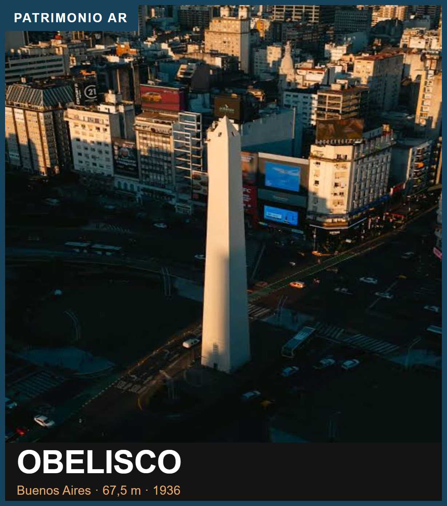
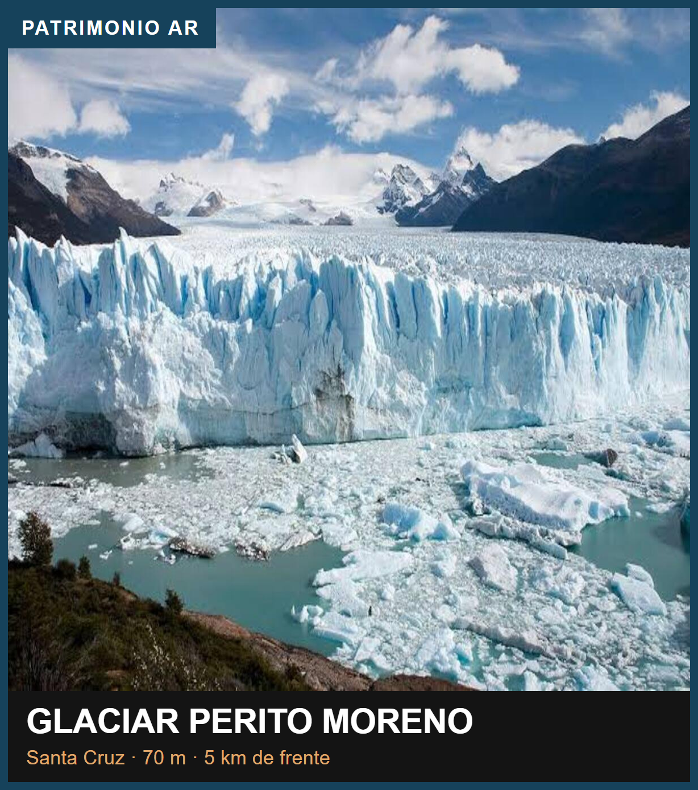

Universidad Tecnologica Nacional
Programacion de Realidad Virtual y Aumentada
Docente: Mariano Antonetti · Parcial 1 · Game Design Document
PATRIMONIO AR
Un set de cartas que devuelve el patrimonio argentino a escala
Alumno: Rios Daniel Agustin
Noviembre de 2026
1. High Concept
Tres cartas de patrimonio argentino que, al escanearse con el celular, levantan el lugar
en 3D sobre la tarjeta, los tres a la misma escala, para poder compararlos de un vistazo y
entender de cuanto estamos hablando cuando decimos «67 metros».
El proyecto es un prototipo de Realidad Aumentada desarrollado en Unity 6000.3.17f1 con
AR Foundation 6.3.5 y Google ARCore XR Plugin 6.3.5, sobre el sistema de seguimiento de
imagenes multiples (image tracking). Cada una de las tres cartas funciona como
imagen marcadora y tiene asociado un diorama tridimensional propio: el Obelisco de Buenos
Aires, las Cataratas del Iguazu y el Glaciar Perito Moreno.
La decision de diseno que ordena todo el desarrollo es que cada lugar esta modelado
en metros reales y los tres comparten una unica escala, 1:400.
Sostener una escala comun, en lugar de ajustar cada lugar al tamano de su tarjeta, es lo que
hace que los tres se puedan comparar entre si: el frente del Perito Moreno,
de 70 metros, se ve apenas mas alto que el Obelisco, de 67,5. Eso es lo que pasa en la
realidad, y es justamente lo contrario de lo que sugiere cualquier fotografia de los dos.
Las tres cartas pueden rastrearse de manera simultanea. Un HUD en pantalla lista las
cartas que el sistema tiene registradas y el estado de seguimiento de cada una, de modo que
el seguimiento multiple no sea una afirmacion del documento sino algo que se lee en la
pantalla mientras la aplicacion corre.
2. Problema o necesidad que resuelve
El patrimonio natural y arquitectonico argentino se comunica, casi siempre, con fotografias.
Y la fotografia es justamente el medio que peor transmite la magnitud: una imagen del frente
del Perito Moreno y una de un bloque de hielo cualquiera se ven parecidas, porque falta el
termino de comparacion. El dato numerico tampoco alcanza por si solo. «Setenta metros
sobre el nivel del agua» es una cifra que se lee y se olvida, porque nadie tiene una
referencia intuitiva de setenta metros verticales.
El problema concreto, entonces, no es la falta de informacion: es la falta de
escala percibida. La informacion sobre estos tres lugares esta disponible en
cualquier buscador; lo que no esta disponible es una manera de dimensionarla.
Patrimonio AR ataca ese punto y solamente ese. No intenta reemplazar a una guia turistica ni
competir con un video: pone los tres lugares sobre la mesa, a una misma escala declarada, al
alcance de la mano y uno al lado del otro. El recurso es viejo y conocido en museografia y en
arquitectura (la maqueta a escala), y la Realidad Aumentada lo hace
posible sin maqueta fisica, sin vitrina y sin sala: alcanza con una carta impresa y un
telefono.
Por eso el soporte elegido es la carta y no una aplicacion con menu de lugares. La carta es
un objeto que ya existe en el circuito turistico, que se regala, que se manda y que se guarda;
convertirla en la llave de acceso al contenido mantiene el gesto fisico y no obliga a aprender
ninguna interfaz. El usuario apunta la camara y el lugar aparece.
3. Usuario objetivo
Usuario primario: estudiantes de nivel primario y secundario (9 a 16 anos)
Es el publico donde el problema de la escala se nota mas y donde el recurso rinde mas. El
contenido de cada ficha esta escrito con ese lector en mente: cinco datos por lugar, concretos
y comparables entre si (altura, ancho de frente, espesor, antiguedad, velocidad de avance), sin
parrafos largos. El uso previsto es en el aula, con las cartas repartidas por grupo y un
telefono o tablet por grupo.
Usuario secundario: visitantes de museos y centros de interpretacion turistica
El mismo set de cartas funciona como material de sala o de tienda: el visitante escanea la
carta que se lleva y accede al diorama. No requiere instalacion de vitrinas ni mantenimiento
de pantallas, y el contenido viaja con el objeto.
Contexto de uso y restricciones que impuso
- Uso de pie, sostenido con una mano, en sesiones cortas de uno o dos minutos por carta.
De ahi que no haya ningun menu ni boton: toda la interaccion es apuntar la camara.
- Iluminacion variable (aula, sala de museo, exterior). De ahi la eleccion de fotografias de
contraste alto que se explica en el punto siguiente.
- Dispositivos de gama media. De ahi que los dioramas se generen con geometria primitiva y
sin texturas, y que la aplicacion se compile para ARM64 con OpenGLES3.
4. Justificacion de las imagenes marcadoras
Las tres marcadoras son fotografias de los propios lugares: la carta tiene que ser
reconocible como lo que es antes de que el usuario levante la camara, porque es el objeto el
que invita a escanear. Pero una foto no sirve como marcador por ser bonita.
ARCore no reconoce una imagen por su contenido sino por sus puntos
caracteristicos: zonas donde el gradiente cambia de forma marcada y localizable.
Necesita detalle denso, contraste alto en escala de grises, ausencia de patrones repetidos
y alguna asimetria que resuelva la orientacion sin ambiguedad. Las tres fotografias elegidas,
en el encuadre en que se usan:

Obelisco · 15 x 17 cm

Cataratas · 15 x 17 cm

Perito Moreno · 15 x 17 cm
| Marcadora |
De donde salen sus puntos caracteristicos, y que resuelve su orientacion |
| Obelisco |
Vista aerea al atardecer: el detalle cubre el cuadro entero, sin zonas planas. Fachadas,
carteles luminosos, sendas peatonales y autos aportan esquinas en todas las direcciones,
y el fuste blanco contra el asfalto en sombra da el contraste mas alto de las tres. La
orientacion la fijan las pantallas LED de la derecha y la plaza oscura
del angulo inferior izquierdo. |
| Cataratas |
Textura densa en casi toda la superficie: los saltos, la roca humeda, la vegetacion y la
espuma del rio. La asimetria la dan el follaje oscuro del borde derecho
y la diagonal de la garganta hacia el angulo inferior izquierdo. |
| Perito Moreno |
El frente astillado ocupa la banda central con altisima frecuencia espacial, y los
tempanos sobre el agua agregan contraste fuerte abajo. La orientacion la fijan la
montana oscura de la derecha y el promontorio rocoso de la izquierda. |
Cada marcadora es una carta: marco, etiqueta y franja inferior con el
nombre y los datos. No es tan alargada como una carta de juego por una razon de tracking:
las fotos son cuadradas, y recortarlas para estirarla se come los bordes, que es donde esta
buena parte del detalle. Ese recorte hundia al Obelisco de 100 a 25; con la foto entera, las
tres puntuan 90, 100 y 95. Miden 1228 x 1388 px y se declaran con un tamano
fisico de 15 x 17 cm, asi que se imprimen al 100%: mas
chicas, la medida declarada deja de ser la real y el diorama sale con el tamano equivocado.
La library se arma por codigo, para que el nombre de cada entrada, la clave con la que se
busca su diorama, no pueda quedar mal escrito.